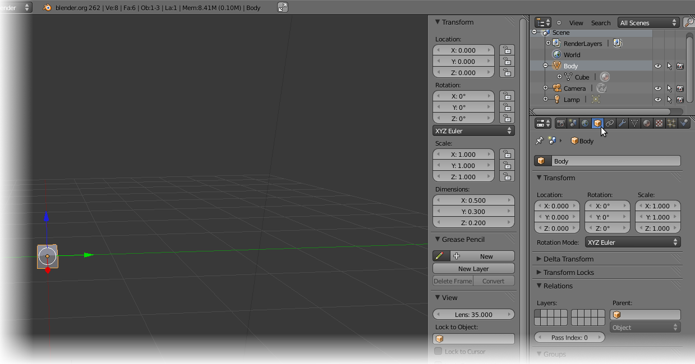
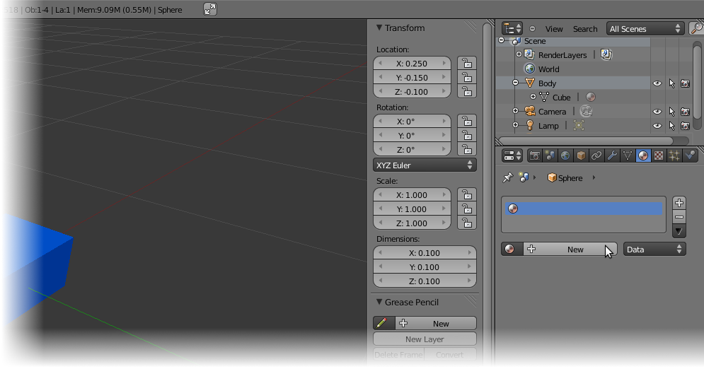
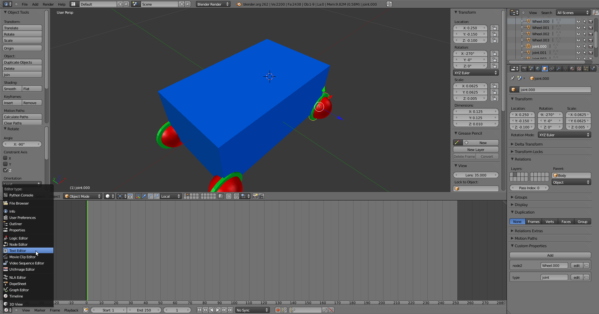
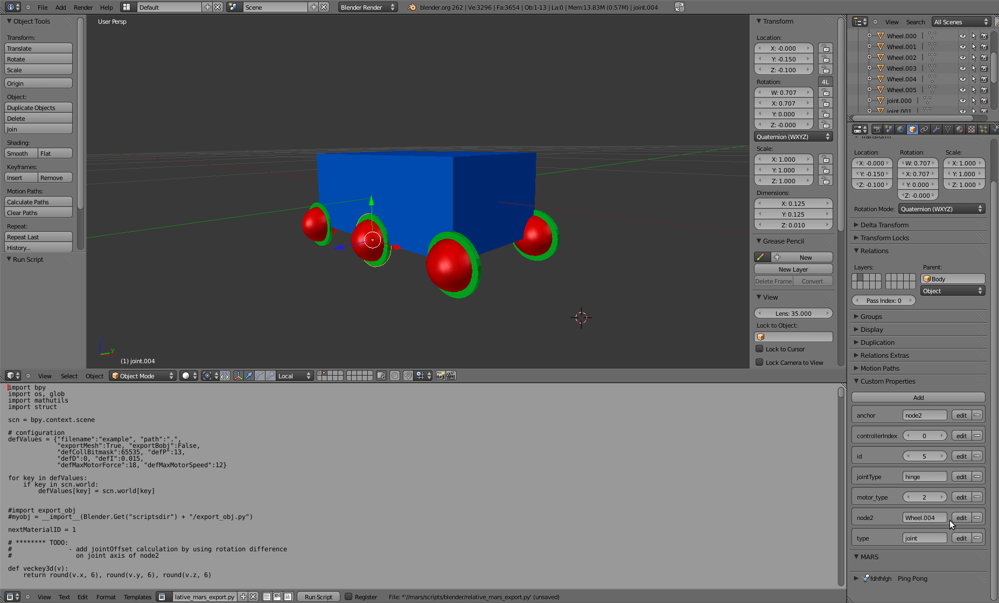

Basic Modeling Tutorial
Introduction
In this tutorial you will learn how to build a simple model of a robot in Blender and how to export it to MARS.
Prerequisites
We assume you already have a MARS development environment setup in "~/devel/". You should also have a recent version of Blender installed (we use 2.62 in this tutorial).
Blender Basics
Blender's shortcuts and hotkeys depend on the context in which they are triggered. The context is usually determined by the mouse cursor. That means that a certain hotkey, "alt+p" for example, will have different meanings depending on the position of the mouse. When the mouse is hovering the 3D-View the hotkey "alt+p" will break up child-parent relations, when hovering the text editor it will run the current script.
3D-View Shortcuts and Hotkeys
- rotate view
- middle mouse button
- move view
- shift + middle mouse button
- zoom view
- mouse wheel or ctrl + middle mouse button
- move object (grab)
- g
- rotate object
- r
- scale object
- s
- restrict move/rotate/scale axis
- Press x, y, or z while moving/rotating/scaling. If you press the same axis again it will select the local axis. Pressing a third time will deselect the axis.
- open toolbar
- n
- select object
- right click
- select multiple objects
- shift + right click or "b" and drag a selection box
- set parent object
- first select child, then the parent (shift + right click), then press "ctrl+p"
Rescaling Objects
If you edit the dimensions of an object in "object mode" you might notice that the scale changes automatically. This is because in object mode you do not really change the object's vertices. To apply the changes you did in "object mode" to the object's vertices you can press "ctrl+a" (with the mouse hovering over the 3D-View) and choose scale. You will notice that the scale in "object mode" is back to (1, 1, 1). Alternatively you can select this option from the menu object->apply->scale

Building the Model
Start by creating a box of the dimensions 0.5 x 0.3 x 0.2 this can be done by directly editing the object properties "Dimensions" in the toolbar.
Rename the object (e.g. "Body") this can be done in the object property window.
Choose a color by selecting a diffuse and/or specular color in the material property window.

It is convinient to have the model on a different layer than the camera and lights. Therefore we move it to a different layer by selecting everything belonging to the model (so far only the box). Then press "m" and select a new layer to move the objects to that layer.
Create a sphere that will serve as a wheel. In the Menu select "Add->Mesh->UV Sphere" and name the object (e.g., "Wheel.000").

Scale the sphere to an appropriate size (we used 0.1 in all dimensions)
Position the sphere at a lower corner of the box be setting its location parameters (e.g., x=0.25; y=-0.15; z=-0.1)
Create a new material by pressing "new" in the material property window
Set material properties for the wheel/sphere.
Set up parent-child relationship between the body and the wheel. Select the child and the parent (in that order) and press "ctrl+p". NOTE: If you want to break up a parent-child relationship you should select the child object in the 3D-View and press "alt+p" (while hovering the 3D-View) and select "Clear and Keep Transformation".
The way we currently export joints from blender to MARS is via helper objects that contain all relevant information (e.g., joint and motor type, limits, etc.) in custom properties. So go ahead and create a arbitrary object (we usually use slim cylinders because you can clearly see the rotation axis) and position it at the location of the joint. It helps if the child object of the joint has the same origin and orientation as the joint helper object. Create two custom properties in the "object property" window.

For the first custom property press edit to set the "property name" to "type" and the "property value" to "joint" for the second custom property press edit to set the "property name" to "node2" and the "property value" to "Wheel.000" this tells the export script that this is a helper object for a "joint" and that the object on the output shaft is the "Wheel.000" object. The object on the input shaft it determined by the parent of the helper object itself so set that to "Body".
By default each joint is automatically associated with a servo motor. To change the motor type to a PID motor you need to create another custom property called "motor_type" and set its value to "2" (note that you might need to increase the "Max" value in the custom property)
Turn the timeline into a text editor
By selecting the menu "text->Open Text Block" in the text editor open the "create_mars_props.py" script from ~/devel/mars/scripts/blender/
Select all objects of the model in the 3d-view and run the script by pressing "Run Script" in the text editor window. You will see that this creates various custom properties on every object. You are free to edit these properties (e.g. set the mass)
For the wheel create two more custom properties: "physicMode" and "radius". Set "physicMode" to "sphere" and "radius" to half the diameter (in our case 0.05). Otherwise the physical representation of the wheels in the simulation would be boxes makeing very poor wheels.
Duplicate the wheel and the helper object by selecting them and pressing "shift+d". A duplicated object will inherit the location, orientation, material, parent, and custom properties among other things. By nameing the first wheel "Wheel.000" we ensure consistent nameing. Blender automatically increases the ending to "Wheel.001" for the duplication. Of course you can set the name to what ever you like.
Also create the last two remaining wheels by duplicating one of the first. Position the four wheels at the four lower corners of the box.
Do not forget to change the value of the "node2" in each of the copied helper objects' custom property.
Add the custom properties "filename" and "path" to the World and fill in where you want to export the scene to. Ideally, this should be an empty directory because bside the .scn file the .obj and .scene files are also exported for debuging purposes.

Load the "relative_mars_export.py" from ~/devel/mars/scripts/blender/ in the text editor window.
Select all objects of the model and run the relative_mars_export script.
Do not forget to save your blender scene.
Congratulations! You have your first blender created MARS scene. However, if you load the scene in MARS and try to do a tank turn you might notice that it does not work to well. You would need to tune the friction parameters for the wheels. Alternatively, we add a third pair of wheels to the model to show the workflow of editing an existing scene.
Reopen your blender scene if you do not have it opened any more.
Duplicate a wheel pair (shift+d after selecting the parts) and move it to the middle of the body ("g" for grab; "x" to constrain the movement to the x-axis; "0.25" to move it to the middle)
Adjust the custom property "node2" of the new joint helper objects to let them point to the new wheels.
Re-run the "create_mars_props.py" script. You need to execute this script everytime you add or remove an object to/from the scene because it will assign unique ids to all objects and group objects belonging together.
Run the "relative_mars_export.py" script to update the scene.
Test in MARS!